小道具の.avatarファイルをiOSアプリのAnimaze Avatarに送信する方法（WindowsにおいてAnimazeエディターを経由）
.avatarファイル形式は、3D/2Dアバター、小道具、背景など、複数の種類のアバターを保管するコンテナの役割を果たします。
.avatarファイルをAnimazeエディターからモバイルデバイスに送信するためには、アーティストパスのサブスクリプションが必要です。設定 > Animazeエディター > エディターに接続 > 接続から、iOSモバイルアプリでアーティストパスを購入してください
アーティストパスを手に入れたら、開始準備完了です！
1 まずは、iPhoneとコンピューターが同じローカルエリアネットワーク内にあることを確認します（同じLAN/WiFi）。
-
-
ローカル接続を有効にする方法は2つあります：
Animazeエディターでツールメニューに移動して、ドロップダウンメニューからローカル接続を選択します
-
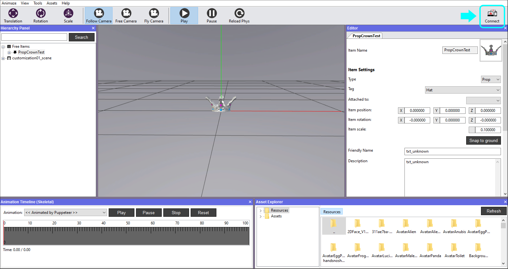
-
2 Animazeエディターの右上端にある「接続」ボタンをクリックして、接続します
3 Animazeコネクトのウィンドウが表示されます。「開始」ボタンをクリックすると、QRコードが表示されます
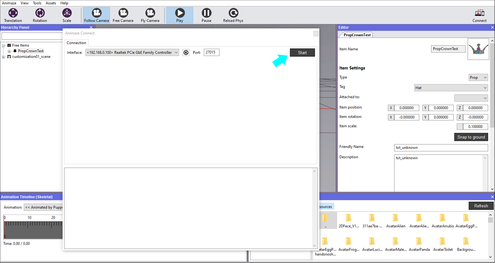
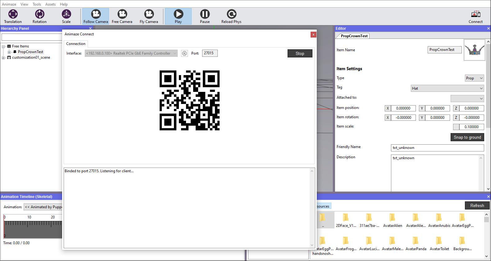
-
モバイルデバイスでAnimaze Avatarのアプリケーションを開きます。メイン画面の右上端にある設定の歯車をクリックします
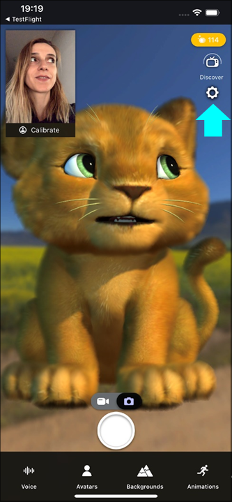
-
Animazeエディターまでスクロールダウンして、「接続」をクリックします
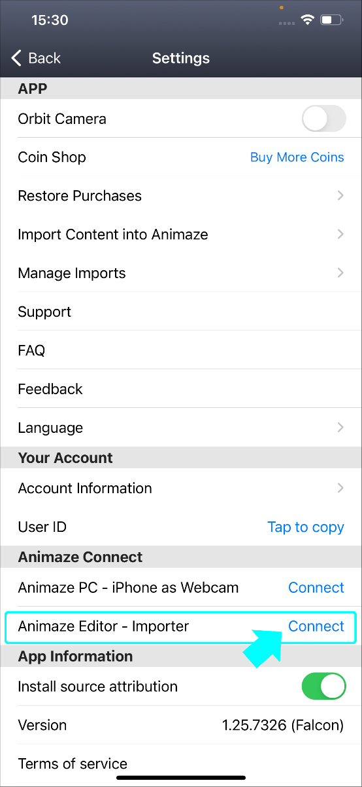
6. 背面カメラが開きますので、QRコードに合わせてスキャンします
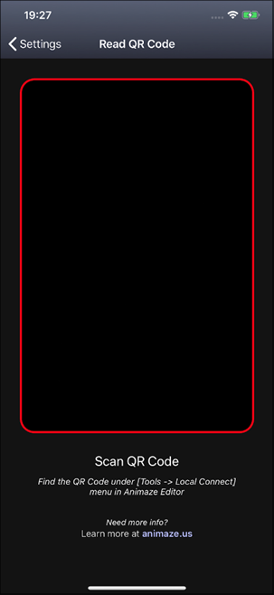
-
スマホ（左側の画像）とAnimazeエディター（右側の画像）で接続の確認が行われます
デバイスを接続したら、次の手順でアバターをモバイルデバイスに送信してください：
8「階層パネル」へ移動して、アバターを右クリックし、「デバイスに送信」を選択します。これにより、小道具がデバイスに送信され、*.avatarファイル形式でバンドル化されます。
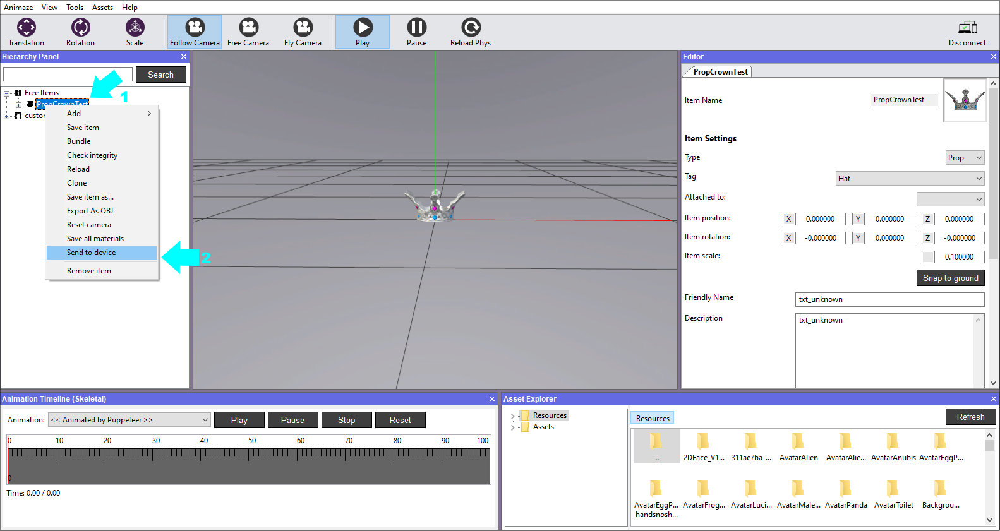
-
モバイルデバイスにファイル転送の承認を求めるポップアップが表示されます

-
承認したら、転送状態の承認メッセージが両方のデバイスに表示されます

-
アプリでアバターギャラリーを開き、カスタマイズするアバターを選択します
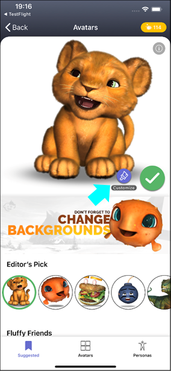
-
カスタマイズ画面の帽子オプションで、スマホへ送信した小道具を見つけます
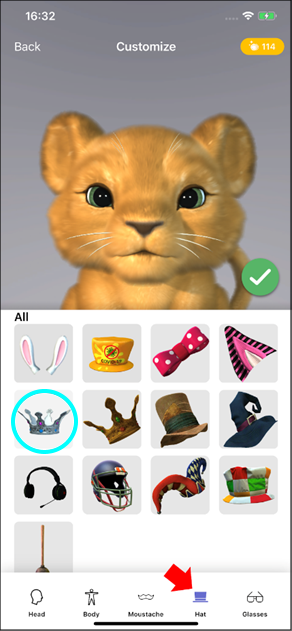
-
その小道具を選択し、必要に応じてスライダーを左右にドラッグしてサイズを調整し、アバターの頭に合わせます。合わせ終わったら緑色のチェックマークをクリックします
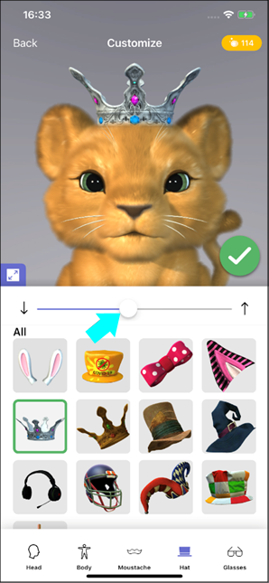
-
保存するスロットを選択します
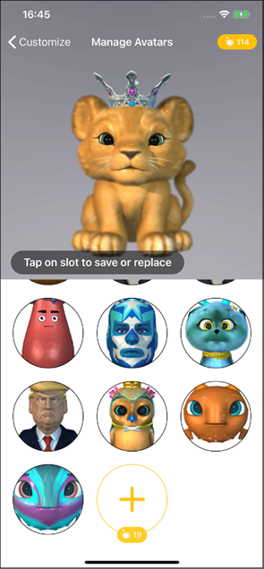
-
メイン画面に王冠をかぶったアバターが表示されます
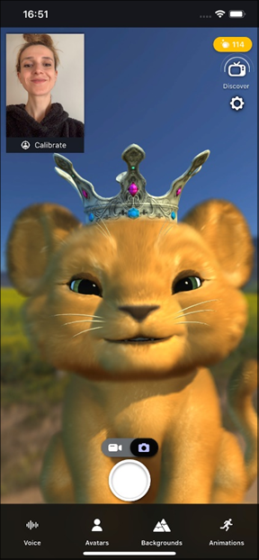